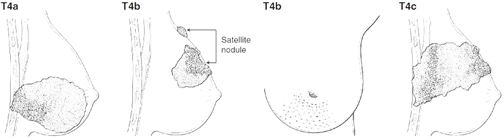

MÓDULO 3 : ENFERMEDAD DISEMINADA Y RECAÍDA LOCORREGIONAL
3.7 Escenarios específicos en cáncer de mama.
Cáncer de mama inflamatorio
Objetivos

Conocer la definición del cáncer de mama inflamatorio.

Conocer la biología de este subgrupo de cáncer de mama y sus características clínicas.
Conocer las peculiaridades en su manejo clínico.
Introducción y epidemiología
El cáncer de mama inflamatorio (CMI) es un tipo infrecuente de CM, que representa en torno al 0,5-2% de los CM diagnosticados. Parece que su incidencia está aumentando más que la del CMNI. Se trata de un CM con un fenotipo agresivo, asociado con un mal pronóstico, que acumula un alto número de muertes en comparación con el resto de CM (7% de toda la mortalidad por CM, cuando su incidencia no supera el 2% de los CM).
Se diagnostica a edades más precoces que el CMNI (alrededor de 5 años antes) y es más frecuente entre pacientes de raza negra, pudiendo representar hasta un 10% de los CM en ciertas zonas geográficas como Oriente Medio o norte de África. Debido a su diagnóstico en mujeres más jóvenes, es responsable de un mayor número de años de vida perdidos que el resto de CM.
Factores de riesgo
En general, los factores de riesgo implicados en el desarrollo de un CMI específicamente no son bien conocidos. El CMI se asocia con un alto índice de masa corporal, tanto entre las mujeres post-menopáusicas como en las pre-menopáusicas, esto último a diferencia del CMNI. Esta relación podría explicarse porque la obesidad se asocia con una infiltración del tejido mamario por macrófagos, propiciando la inflamación crónica.
Se han objetivado dos perfiles epidemiológicos distintos entre las pacientes con CMI. Por un lado, mujeres afroamericanas con edad joven al nacimiento del 1er hijo, multiparidad y ausencia de lactancia materna. Esto se debería a una involución aberrante del tejido mamario tras el embarazo, con la formación de un microambiente pro-inflamatorio, producción de estrés oxidativo y daño al ADN, así como acúmulo de células madres tumorales. La repetición de este círculo con las gestaciones subsecuentes promovería el enriquecimiento de un microambiente pro-tumoral y facilitaría la proliferación celular inducida por hormonas y expansión clonal. Por otro lado, mujeres de raza caucásica, con edad tardía al 1er embarazo, en las que el tejido mamario acumula daño molecular, haciéndolo más susceptible a carcinógenos, con proliferación celular y expansión clonal inducida por hormonas durante el embarazo.
El CMI parece tener una mayor incidencia en países en vías de desarrollo en comparación con países desarrollados.
Diagnóstico
El diagnóstico de CMI es un diagnóstico clínico, caracterizado por el rápido desarrollo de síntomas cutáneos y la confirmación histológica de cáncer de mama.
El diagnóstico de CMI requiere los siguientes criterios :
Instauración rápida de eritema, edema cutáneo o piel de naranja/mama caliente, con o sin tumoración subyacente.
Duración de los síntomas < 6 meses.
Eritema que ocupa al menos 1/3 de la mama.
Confirmación histológica de carcinoma invasivo.
Exploración física
A la exploración física, el CMI se caracteriza por eritema difuso de la mama y calor local, acompañados de edema cutáneo, con aspecto de piel de naranja, con o sin tumoración subyacente. Se recomienda la toma de fotografías basales para documentar los hallazgos clínicos al diagnóstico.
Yamauchi et al. The Oncologist 2012.
Pruebas complementarias
Mamografía/ecografía
No hay datos radiológicos específicos del cáncer de mama inflamatorio. En la mamografía puede objetivarse una masa tumoral, engrosamiento cutáneo y trabecular de la mama, áreas de calcificaciones o distorsión parenquimatosa. Sin embargo, la mamografía tiente una baja sensibilidad para el diagnóstico de CMI por la distribución difusa de las alteraciones. Dada la menor sensibilidad en estos tumores y la velocidad de crecimiento de los CMI, el diagnóstico por alteraciones en la mamografía de cribado ocurre en menos del 10% de los CMI. La ecografía de la mama puede detectar una masa potencialmente biopsiable en la amplia mayoría de CMI, y es esencial para la estadificación inicial y valoración de áreas ganglionares axilares.
RM mamaria
Los hallazgos típicos del CMI en la RM son el edema mamario difuso y prepectoral, engrosamiento cutáneo difuso que realza con el contraste (objetivado en > 90% de los CMI a diferencia de los CM de larga evolución, ver imagen) y realces tipo masa o nodulillares por la mama. Con la RM se logra identificar masa mamaria subsidiaria de biopsia en prácticamente la totalidad de las pacientes con CMI.
RM con realce cutáneo por CMI
Biopsia
Es imprescindible la confirmación histológica de malignidad, acompañada de los cambios cutáneos. Se recomienda biopsia de la masa tumoral si hay masa palpable subyacente, y debería obtenerse asimismo una biopsia cutánea que englobe la totalidad del grosor cutáneo, ya que uno de los sellos de esta enfermedad es la invasión linfática por células tumorales, identificándose en más del 75% de los casos. Esta biopsia de la piel, aunque recomendable, no es necesaria para el diagnóstico.
Estadificación axilar
Hasta el 85% de los CMI van a tener afectación axilar al diagnóstico. En caso de adenopatías sospechosas se recomienda la confirmación histológica mediante PAAF o BAG. La BSGC no se considera una técnica adecuada en el CMI, y se han descrito alta tasa de falsos negativos en la BSGC post-neoadyuvancia. De esta forma, tanto las guías ASCO 2016 como las guías NCCN 2018 desaconsejan la realización de BSGC en CMI.
Estadificación a distancia
El CMI se caracteriza por un patrón de diseminación metastásica precoz, y se estima que hasta el 40% de los CMI van a presentar metástasis a distancia al diagnóstico (frente al 6-10% del resto de CM).
Los CMI presentan hasta en el 85% de los casos afectación ganglionar al diagnóstico y hasta en un 40% metástasis a distancia.
El CMI se define como un T4d en la estadificación TNM de la AJCC (8ª edición). Es importante diferenciarlos de otras formas de CMNI que pueden llevar a confusión:
La identificación de émbolos linfáticos sin los cambios clínicos cutáneos debe estadificarse de acuerdo al tamaño tumoral (T1-T3) y no como un T4d.
Carcinomas de mama localmente avanzados que invaden la dermis o ulceran la piel sin los cambios cutáneos característicos, no deben considerarse T4d (ver imagen).
Carcinomas de larga evolución que se han descuidado y presentan los cambios clínicos del CMI tampoco deben considerarse como CMI, ya que la definición de CMI incluye la rapidez de instauración, con < 6 meses desde la aparición de los síntomas.
Es importante señalar que en el caso de definirse un tumor como carcinoma inflamatorio, se considerará como tal a lo largo de la evolución, independientemente de la respuesta que se obtenga con los tratamientos.

Diagnóstico diferencial del CM localmente avanzado no inflamatorio. AJCC TNM Staging 8th edition
Diagnóstico diferencial
El CMI es con frecuencia confundido inicialmente con otra patología, lo que conlleva retrasos diagnósticos en un porcentaje significativo de casos. Debe realizarse el diagnóstico diferencial con mastitis, otros procesos inflamatorios o infecciosos, y sarcomas. Muchas pacientes son diagnosticadas tras varias tandas de antibioterapia.
El diagnóstico del CMI es un diagnóstico clínico e incluye los siguientes criterios: instauración rápida de eritema, edema cutáneo o piel de naranja, con o sin tumoración subyacente, duración de los síntomas < 6 meses, eritema que ocupa al menos 1/3 de la mama y confirmación histológica de carcinoma invasivo. El CMI es un estadio T4d.
Características clínicas e histopatológicas
El CMI es un tumor con un fenotipo agresivo, generalmente de alto grado y de tipo ductal usual no específico. Se pueden encontrar todos los subtipos IHQ y moleculares dentro del CMI. Las células tumorales en sí no presentan diferencias con respecto a otros tumores de mama de fenotipo agresivo, aunque con frecuencia se distribuyen formando agrupaciones diseminadas por la mama y vasos linfáticos cutáneos, sin formar masas tumorales, lo que justifica la alta tasa de falsos negativos en las pruebas de imagen. Con frecuencia se evidencian “skip” metástasis, como lesiones en la mama separadas por tejido mamario sano, probablemente secundarias a circulación por los linfáticos. Se objetiva una mayor neovascularización y linfangiogénesis que en el resto de CM.
A nivel del perfil inmunohistoquímico (IHQ), la expresión de receptores hormonales es menos frecuente que en el CM no inflamatorio, y por el contrario existe un enriquecimiento en tumores con sobreexpresión de HER2 y carcinomas de mama triple negativos:
Alrededor del 30-50% de CMI presentarán expresión de receptores hormonales (RE y/o RP > 1% según las guías ASCO-CAP), frente a un 60-80% en CMNI.
En torno a un 40% de tumores HER2-positivos, frente a 20-25% en CMNI.
Alrededor de 30% de tumores triples negativos, frente a un 10-15% entre el CMNI.
Parece que cada uno de estos subtipos se asocia con un peor pronóstico en cuanto a SLE y SG en comparación con los CMNI del mismo subtipo. Con respecto a pacientes con CMI receptores hormonales positivos, se ha objetivado un mal pronóstico y pobre respuesta al tratamiento endocrino.
De la misma manera que el CMTN es una enfermedad heterogénea, el CMI TN engloba también una población heterogénea de pacientes. Entre estas pacientes con CMI TN se objetiva una distribución similar de subtipos de triple negativo de Lehmann (BL1, BL2, M, MSL, IM y LAR) al de los CMTN no inflamatorios.
A nivel molecular, el CMI se caracteriza por un fenotipo agresivo, hiperproliferativo, con expresión de vías de señalización inflamatorias, células madre, y angiogénesis.
Existe una menor proporción de expresión de receptores hormonales en CMI, y una sobre-representación de tumores HER2-positivos y CMTN.
Fisiopatología
Los cambios en la piel característicos del CMI se deben a émbolos tumorales en los vasos linfáticos dérmicos, y no por infiltración por células inflamatorias. Aunque la documentación de émbolos tumorales linfáticos dérmicos apoya el diagnóstico, no es necesaria.
Una característica del CMI es la sobreexpresión de e-cadherina, una glicoproteínas implicada en la adhesión intercelular, de forma ubicua en el tumor, émbolos tumorales linfáticos y metástasis de CMI. Parece que esta sobreexpresión de e-cadherina es responsable de la formación de los microémbolos, al facilitar el movimiento de células tumorales a los vasos linfáticos. Una vez en los vasos linfáticos, las células tumorales no podrían unirse a las células endoteliales y se impediría de esta forma su extravasación, y, en consecuencia, taponarían los vasos linfáticos formando los microémbolos. Otra teoría sobre el origen de los microémbolos sugeriría que las células progenitoras normales podrían rodear al tumor formando vasos linfáticos alrededor, y creando de esta forma los émbolos.
Los cambios cutáneos en el CMI se deben a émbolos tumorales linfáticos y no a la infiltración por células inflamatorias.
Tratamiento del CMI
El tratamiento del CMI debe incluir las 3 modalidades: tratamiento sistémico, cirugía radical y radioterapia. En series antiguas con cirugía exclusiva, >90% de pacientes presentaban una recaída y/o enfermedad metastásica a los 2 años del diagnóstico, y la SG a 5 años era < 5%. Por tanto, no debe considerarse el tratamiento quirúrgico exclusivo sin tratamientos complementarios.
En el caso de ausencia de metástasis (T4d, N0-N3, M0), el tratamiento es similar al del CM general, salvo por la excepción de que la cirugía conservadora y BSGC no son opciones adecuadas, incluso en el caso de buena respuesta a la QTNA. El abordaje habitual es la quimioterapia neoadyuvante (QTNA), seguido de mastectomía con linfadenectomía axilar y posterior RT complementaria. En el caso del CMI debe plantearse la administración de la QT en el escenario neoadyuvante, ya que el abordaje quirúrgico de entrada se asocia con un peor pronóstico. En los tumores HER2-positivos deberá asociarse terapia antiHER2 con trastuzumab y pertuzumab, y hormonoterapia complementaria posterior en el caso de receptores hormonales positivos.
En pacientes con CMI E IV, el tratamiento sistémico con QT y agentes antiHER2 si clínicamente indicados, debería ser también la aproximación inicial al tratamiento. En el caso de lograr una buena respuesta, debería discutirse en comités multidisciplinares la posibilidad de realizar una cirugía de la mama y/o la administración de radioterapia. Aunque los beneficios en términos de SLE y SG del tratamiento local en pacientes con enfermedad metastásica no están bien documentados, dada la morbilidad de la progresión locorregional (desarrollo de mamas en coraza, dolor, ulceración, y sangrado), debería valorarse la opción de un tratamiento locorregional.
Además de una alta incidencia de metástasis a distancia al diagnóstico, hasta en el 27% de los CMI se detecta afectación ganglionar contralateral, y en el 13% afectación ganglionar exclusivamente contralateral, sin afectación a distancia. En estos casos se puede plantear un abordaje radical, con datos que sugieren un intervalo libre de enfermedad prolongado.
El tratamiento del CMI debería incluir el tratamiento sistémico, cirugía radical y radioterapia complementaria. El CMI es una indicación de QT neoadyuvante.
Cirugía
La cirugía sólo debería llevarse a cabo en el caso de que sea posible una resección macroscópica completa. La cirugía con obtención de márgenes negativos se asocia con un mejor control local y un mejor pronóstico.
En el CMI se recomienda la realización de mastectomía independientemente de la respuesta. Esta indicación se basa en que podría quedar enfermedad residual en la piel de la mama afectada a pesar de una buena respuesta, y que, además, el CMI no se incluyó en los ensayos que demostraron la seguridad de la cirugía conservadora con radioterapia frente a la mastectomía. Por tanto, no se puede recomendar la realización de una cirugía conservadora en el CMI. Ciertos grupos, como el UK
Inflammatory Breast Cancer Working group, comienzan a cuestionar esta indicación, refiriendo que no habría contraindicación para plantear una cirugía conservadora en casos seleccionados, con baja carga tumoral, buena respuesta al tratamiento neoadyuvante, y siempre que se puedan asegurar márgenes libres. Sin embargo, de momento la recomendación global en CMI es la realización de una mastectomía independientemente de la respuesta.
En el caso de pacientes con sospecha clínica de afectación ganglionar al diagnóstico, no se recomienda la realización de BSGC post-neoadyuvancia por ausencia de migración del radiotrazador en hasta el 75% de los casos. Se recomienda por tanto la linfadenectomía de niveles I y II.
Se desaconseja la reconstrucción mamaria inmediata por el alto riesgo de recidiva local. Dada la afectación cutánea característica del CMI, no se recomienda la reconstrucción inmediata con colocación de expansor, ya que esta técnica requiere la conservación de piel. Se recomienda por el contrario la reconstrucción mamaria en diferido.
La mastectomía y linfadenectomía axilar es la técnica quirúrgica de elección en el CMI. Se desaconseja la realización de BSGC post-neoadyuvancia en CMI. No se recomienda la reconstrucción mamaria inmediata.
En el caso de no objetivarse una respuesta adecuada a la neoadyuvancia, y que no sea posible una cirugía con márgenes libres, debería plantearse una 2ª línea de QT o la radioterapia.
Radioterapia
Se recomienda la administración de radioterapia complementaria tras mastectomía independientemente de la respuesta al tratamiento. En general, se recomienda la administración de > 50 Gy sobre el lecho de mastectomía y cadenas ganglionares ipsilaterales, axilares, supra e infraclaviculares. La irradiación de cadena mamaria interna sólo debería realizarse en el caso de sospecha de afectación. Aunque la radioterapia no ha demostrado un aumento de la supervivencia global, sí se asocia con un aumento del control local. Parece que una dosis escalada de RT de hasta 66 Gy se asocia con mejores resultados, especialmente en pacientes de alto riesgo (pobre respuesta a la QT, márgenes quirúrgicos positivos o cercanos, afectación de 4 o más adenopatías tras QTNA y edad < 45 años).
La radioterapia puede plantearse también de forma prequirúrgica en el caso de tumores no operables, e incluso se ha estudiado su uso en combinación con la quimioterapia, sin asociar cirugía. Un ensayo clínico monocéntrico llevado a cabo entre 1983 y 1989 evaluó el tratamiento alternado con QT y RT en CMI no metastásico, sin cirugía. Se incluyeron 124 pacientes, la mayoría de ellas con afectación ganglionar (cN1 68% y cN2 11%). Con una mediana de seguimiento de 20 años, la tasa de control local era del 82%. La supervivencia global a 10 y 20 años fue del 39 y 19% respectivamente, similares a las descritas en pacientes tratados con cirugía. La mayoría de las recaídas locales ocurrieron durante los 4 primeros años y las recaídas metastásicas en los 3 primeros años.
Por tanto, existen indicios de que un tratamiento combinado de quimioterapia y radioterapia podría obtener buenos resultados en CMI. Sin embargo, la combinación de tratamiento sistémico, cirugía y radioterapia sigue siendo el abordaje recomendado en estas pacientes.
Hay indicación de radioterapia tras la cirugía en CMI, independientemente de la respuesta. La radioterapia puede ser una opción en pacientes sin posibilidad de cirugía con márgenes libres.
Tratamiento sistémico
Como se ha comentado previamente, el tratamiento sistémico debe ser el tratamiento inicial en el CMI. Al igual que en el resto de CM, el perfil IHQ del tumor es el factor más determinante en la elección del tratamiento en el CMI.
Aunque no existe un esquema terapéutico estándar, en general, las guías recomiendan el tratamiento secuencial con antraciclinas y ciclofosfamida, seguido de taxanos, similar al tratamiento de los CMNI localmente avanzados. La incorporación de los taxanos al tratamiento del CMI ha demostrado un incremento en las tasas de respuesta patológica completa (pCR). Los esquemas en dosis densas, administrados quincenalmente, pueden ser una opción en estas pacientes de alto riesgo. En pacientes con CMI triple negativo o HER2-positivo se puede valorar la incorporación de sales de platino al tratamiento, al demostrar un incremento en la tasa de respuestas completas patológicas (pCR).
La respuesta obtenida, y en concreto alcanzar una pCR tras la QTNA, asocia importante valor pronóstico e informa sobre el control local.
En el caso de sobreexpresión de HER2 debería asociarse un doble bloqueo antiHER2, y en el caso de expresión de receptores hormonales, hormonoterapia complementaria. El trastuzumab puede combinarse de forma segura con la radioterapia.
El tratamiento sistémico del CMI E IV o recidivado, debería seguir las indicaciones del tratamiento del CM E IV no inflamatorio.
En pacientes con CMI HER2-negativo y enfermedad residual tras neoadyuvancia se puede plantear el tratamiento adyuvante con capecitabina tras los resultados del ensayo CREATE-X.
La monitorización de la respuesta debe realizarse mediante la exploración física y RM mamaria.
Terapia anti-HER2
El estudio NOAH evaluó la adición de trastuzumab al tratamiento neoadyuvante del cáncer de mama localmente avanzado o inflamatorio HER2-positivo. Este estudio incluyó 334 pacientes, de las cuales 77 tenían CMI. Las pacientes eran aleatorizadas a recibir trastuzumab además de la QT, basada en adriamicina y paclitaxel seguido de 3 ciclos de CMF (ciclofosfamida, metotrexate y fluorouracilo). Se objetivó un beneficio significativo con la adición de trastuzumab al tratamiento, con un incremento en la tasa de respuestas patológicas completas (pCR en mama y axila), del 19 al 38%. Además, se objetivó un beneficio en supervivencia libre de eventos (SLE) y una tendencia a un aumento en la supervivencia global (SG). Con una mediana de seguimiento de 5,4 años, la SLE era del 45% y 53% para los grupos de QT y trastuzumab respectivamente (HR 0,64, p=0,016). La SG a 5 años era del 74% y 63% para los grupos de trastuzumab y control. Al considerar el CMI por separado, estas diferencias eran aún más significativas, con una SLE a 5 años del 64% con trastuzumab frente al 24% en el grupo control, y del 74% frente a 44% en SG.
Recientemente se ha incluido el tratamiento con pertuzumab al tratamiento neoadyuvante del CMI debido a los resultados de los ensayos NeoSphere y TRYPHAENA, que, aunque no se llevaron a cabo en CMI específicamente (alrededor del 6-7% en ambos estudios), demostraron un beneficio con la incorporación de pertuzumab en términos de pCR y una tendencia a una mayor SLE y SG. En el estudio TRYPHAENA, la tasa de pCR en las 3 ramas (FEC seguido de docetaxel, trastuzumab y pertuzumab, FEC seguido de docetaxel, en combinación desde el inicio con trastuzumab y pertuzumab, y docetaxel, carboplatino, trastuzumab y pertuzumab) se situó entre el 57,3-66,2%. En el ensayo NeoSphere, las pacientes que recibieron docetaxel, trastuzumab y pertuzumab neoadyuvante alcanzaron la pCR en el 45,8% de los casos, frente al 29,0% de aquellas tratadas con docetaxel y trastuzumab. Por tanto, se recomienda la administración de trastuzumab y pertuzumab en pacientes con CMI HER2-positivo.
En cuanto al tratamiento adyuvante, aunque el estudio APHINITY objetivó un beneficio modesto con el tratamiento con pertuzumab adyuvante hasta completar un año (recidivas en el 7,1% y 8,7% de las pacientes en las ramas de pertuzumab + trastuzumab frente a trastuzumab en monoterapia, HR=0,81, p=0,045), se vio que el mayor beneficio se concentraba en mujeres con alto riesgo de recaída. Esto sugiere que el tratamiento adyuvante combinado con trastuzumab y pertuzumab podría ser una opción en las pacientes con CMI.
El tratamiento estándar del CMI HER2-positivo incluye la QT neoadyuvante con doble bloqueo anti-HER2 con trastuzumab y pertuzumab.
Hormonoterapia
Todas las pacientes con CMI y receptores hormonales positivos deberían recibir hormonoterapia tras la quimioterapia y cirugía. Dado las características de riesgo de estas pacientes, se recomienda la extensión del tratamiento hormonal hasta 10 años. En mujeres pre-menopáusicas, debería valorarse la supresión ovárica con análogos de la LHRH asociado a tamoxifeno o inhibidores de la aromatasa.
Otras terapias
Dado el mal pronóstico del CMI, se han llevado a cabo grandes esfuerzos para mejorar los resultados en estas pacientes, sin lograr beneficios significativos con los fármacos evaluados. Por un lado se estudió el potencial papel de bevacizumab en el tratamiento neoadyuvante del CMI, basado en el teórico aumento de la angiogénesis que existe en este subtipo de tumores. Sin embargo, no se objetivó de forma consistente un incremento significativo en las pCR con la incorporación de bevacizumab en el CMI, y, por tanto, no se recomienda su utilización. Por otro lado, dado que un 30% de CMI sobreexpresan el EGFR, se ha evaluado el tratamiento con lapatinib en CMI, un inhibidor dual de EGFR y HER2 de tipo tirosina kinasa. En un fase II en el que pacientes con CMI recibían 12 semanas de paclitaxel y lapatinib neoadyuvante, se objetivaron pCR de entorno al 18,2%.
Pronóstico
El CMI se asocia con un peor pronóstico y mayor riesgo de recaída que el CM localmente avanzado no inflamatorio, con una mediana de supervivencia a 5 años de en torno a 55%. Se estima que hasta un 40% de pacientes con CMI E III van a desarrollar metástasis a distancia a pesar de un tratamiento con QT, cirugía y radioterapia.
Este mal pronóstico se relaciona con la alta capacidad metastásica del CMI. En los primeros 5 años tras el diagnóstico, se objetiva una superposición entre las curvas de supervivencia del CMI E III y el CMNI E IV.
Al ajustar por estadio, existen importantes diferencias pronósticas entre el CMI y CMNI. En el estadio III, se estima que la SG de 4,75 años frente a 13,4 años para los CMI y CMNI respectivamente. En un análisis retrospectivo de > 1500 pacientes con CM con metástasis a distancia de inicio, se objetivó un peor pronóstico entre pacientes con cáncer de mama inflamatorio que entre aquellas con CM E IV no-inflamatorio (2,27 vs 3,40 años, p=0,013), aunque estos hallazgos pueden deberse en parte al enriquecimiento en tumores TN entre las pacientes con CM inflamatorio.
Estas diferencias pronósticas hacen que se haya propuesto una modificación al sistema de estadificación TNM de la AJCC, separando el CM E IV inflamatorio y no-inflamatorio.
El CMI se asocia con un peor pronóstico en comparación con el CMNI.
Supervivencia global de CMI y CMNI. Dawood 2015
Bibliografía |
|
|---|---|
1 |
Van Huden DJP. (2015). Inflammatory breast cancer: An overview. Crit Rev Oncol Hematol, 93:116-126. |
2 |
Rea D. (2015). Inflammatory breast cancer: time to standardise diagnosis assessment and management, and for the joining of forces to facilitate effective research. Br J Cancer, 112:1613–1615. |
3 |
Lim B. (2018). Inflammatory breast cancer biology: the tumour microenvironment is key. Nat Rev Cancer, 18:485-499. |
4 |
Woodward. (2015). Inflammatory breast cancer: unique biological and therapeutic considerations. Lancet Oncol, 16: e568–76. |
5 |
Lyman G. (2017). Sentinel Lymph Node Biopsy for Patients With Early-Stage Breast Cancer: American Society of Clinical Oncology Clinical Practice Guideline Update. J Clin Oncol, 35:561-564. |
6 |
The American College of Surgeons. (2017). AJCC Cancer Staging Manual, Eight Edition. |
7 |
Fouad T. (2018). Distinct epidemiological profiles associated with inflammatory breast cancer (IBC): A comprehensive analysis of the IBC registry at The University of Texas MD Anderson Cancer Center. Plos One, 3:e0204372. |
8 |
Fouad T. (2017). Inflammatory breast cancer: a proposed conceptual shift in the UICC–AJCC TNM staging system. Lancet Oncol, 18: e228-e232. |
9 |
Ueno T. (2018). International Consensus on the Clinical Management of Inflammatory Breast Cancer from the Morgan Welch Inflammatory Breast Cancer Research Program 10th Anniversary Conference. J Cancer, 9:1437-1447. |
10 |
NCCN Breast Cancer Guidelines 2018. |
11 |
Lyman G. (2016). Sentinel Lymph Node Biopsy for Patients With Early-Stage Breast Cancer: American Society of Clinical Oncology Clinical Practice Guideline Update. J Clin Oncol, 35:561-564. |
12 |
Fouad T. (2015). Overall survival differences between patients with inflammatory and noninflammatory breast cancer presenting with distant metastasis at diagnosis. Breast Cancer Res Treat, 152: 407–416. |
13 |
Copson E. (2018). The presentation, management and outcome of inflammatory breast cancer cases in the UK: Data from a multi-centre retrospective review. Breast, 42:133-141. |
14 |
Bourgier C. (2012). Exclusive alternating chemotherapy and radiotherapy in nonmetastatic inflammatory breas cancer: 20 years of follow-up. Int J Radiation Oncology Biol Phys, 82:690-695. |
15 |
Gianni L. (2010). Neoadjuvant chemotherapy with trastuzumab followed by adjuvant trastuzumab versus neoadjuvant chemotherapy alone, in patients with HER2-positive locally advanced breast cancer (the NOAH trial): a randomised controlled superiority trial with a parallel HER2-negative cohort. Lancet, 375: 377–84. |
16 |
Gianni L. (2014). Neoadjuvant and adjuvant trastuzumab in patients with HER2-positive locally advanced breast cancer (NOAH): follow-up of a randomised controlled superiority trial with a parallel HER2-negative cohort. Lancet Oncol, 15: 640–47. |
17 |
Schneeweiss A. (2013). Pertuzumab plus trastuzumab in combination with standard neoadjuvant anthracycline-containing and anthracycline-free chemotherapy regimens in patients with HER2-positive early breast cancer: a randomized phase II cardiac safety study (TRYPHAENA). Ann Oncol, 24: 2278–2284. |
18 |
Schneeweiss A. (2018). Long-term efficacy analysis of the randomised, phase II TRYPHAENA cardiac safety study: Evaluating pertuzumab and trastuzumab plus standard neoadjuvant anthracycline-containing and anthracycline-free chemotherapy regimens in patients with HER2-positive early breast cancer. Eur J Cancer, 89:27-35. |
19 |
Gianni L. (2012). Efficacy and safety of neoadjuvant pertuzumab and trastuzumab in women with locally advanced, inflammatory, or early HER2-positive breast cancer (NeoSphere): a randomised multicentre, open-label, phase 2 trial. Lancet Oncol, 13: 25–32. |
20 |
Gianni L. (2016). 5-year analysis of neoadjuvant pertuzumab and trastuzumab in patients with locally advanced, inflammatory, or early-stage HER2-positive breast cancer (NeoSphere): a multicentre, open-label, phase 2 randomised trial. Lancet Oncol, 17: 791–800. |
21 |
Bertucci F. (2016). Bevacizumab plus neoadjuvant chemotherapy in patients with HER2-negative infl ammatory breast cancer (BEVERLY-1): a multicentre, single-arm, phase 2 study. Lancet Oncol, 17:600-11. |
22 |
Gonçalves A. UNICANCER-PEGASE 07 study: a randomized phase III trial evaluating postoperative docetaxel–5FU regimen after neoadjuvant dose-intense chemotherapy for treatment of inflammatory breast cancer. Ann Oncol 26:1692–1697. |